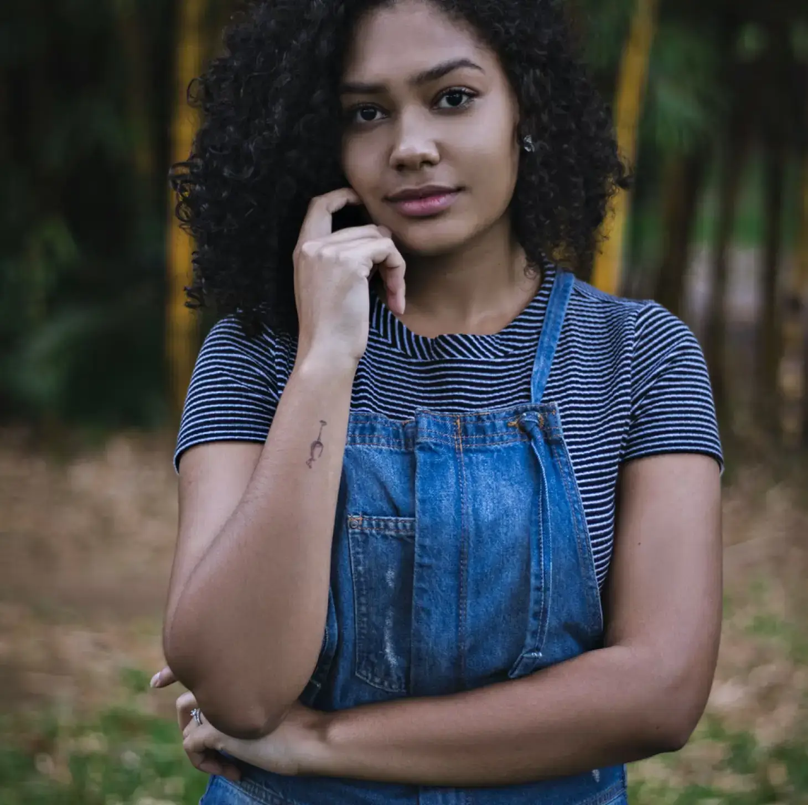

Un portrait n'est pas une ressemblance. Dès lors qu'une émotion ou qu'un fait est traduit en photo, il cesse d'être un fait pour devenir une opinion. L'inexactitude n'existe pas en photographie. Toutes les photos sont exactes. Aucune d'elles n'est la vérité.

À propos de moi
Devenir photographe était pour moi une évidence. Depuis toujours, je suis fasciné par la capacité de la photographie à capturer des moments uniques, des émotions intenses et des détails subtils pour les rendre éternel. Voilà ma passion.
Nous sommes tous à la recherche du bonheur, et rien n'est plus gratifiant que de pouvoir le revivre à travers des photographies. En tant photographe professionnel, spécialisée dans l'immortalisation des moments précieux tels que les mariages, les séances en famille et les évènements d'une entreprise, je m'engage à capture ces moments précieux avec sensibilité et expertise. Que ce soit pour immortaliser un sourire complice, un regard émerveillé ou la magie d'un concert vibrant d'énergie, chaque instant est une histoire à raconter et un souvenir à chérir. En tant que photographe à proximité, présente à vos côtés, que ce soit à domicile, lors d'un évènement d'entreprise ou en plein air. Ma démarche artistique et technique vise à préserver ces instants remplis d'amour, de bonheur et d'émotion, chaque fois que vous contemplerez vos photos.
Portfolio
Mes services
Séance photo
Capturez vos moments les plus précieux avec un photographe professionnel à domicile en Île-de-France, je me déplace pour vous offrir des photos inoubliables et de qualité exceptionnelle.
350€/demi-journée
Équipment et déplacement inclusRetouche
Vous chercher une retouche photos professionnel pour sublimer vos images? Optez pour notre service de retouche photo et obtenez un rendu optimal pour vos publications.
50€/photo
Deux révisions par photoAlbums photos
Albums photos personnalisé, témoins de moments précieux à partager avec vos proches ou vos clients.
400€ album format lettre
30 pages recto verso>De manière inconsciente, je crois, je guette un regard, une expression, des traits ou une nostalgie capable de résumer ou plus exactement de révéler une vie. /*****/ Inconsciemment, je pense que je suis toujours à la recherche d'un look, d'une expression, d'un trait ou d'un sentiment de nostal capable de définir - ou plus précisément -de révéler la vie.